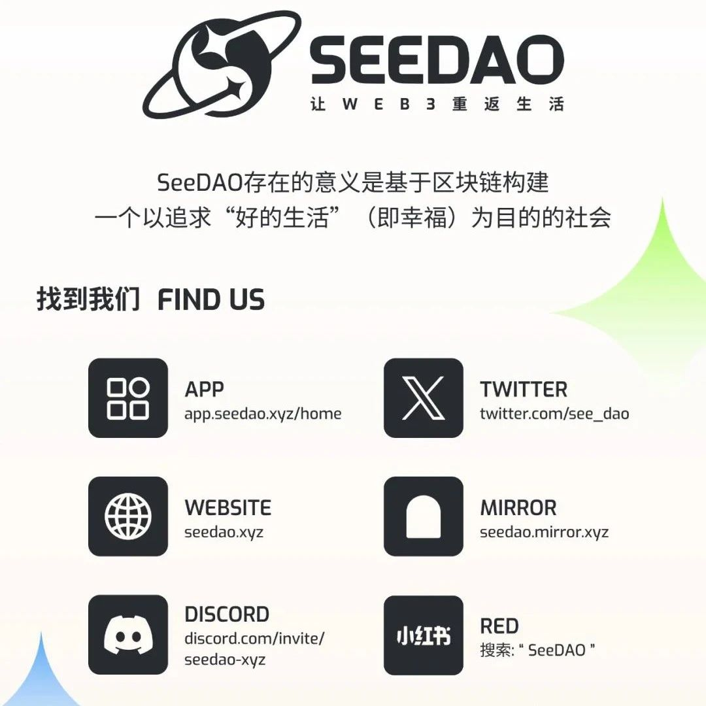

SeeDAO第八届节点大会预热！
作者: SeeDAO
Hi，亲爱的社区成员，SeeDAO 第八届节点共识大会将于8月31日（周六）开始，会议为期两天（8月31日至9月1日）。


Hi，亲爱的社区成员，SeeDAO 第八届节点共识大会将于8月31日（周六）开始，会议为期两天（8月31日至9月1日）。从今天起，社区将进入节点共识大会的预热周，请大家多多留意相关通知，踊跃参与社区活动~
请具备 S8 节点资格者在截止时间前，在节点共识大会网站 Claim 节点资格，Claim 将于2024/08/29 00:00 (UTC+8) 截止。
🔗https://node.seedao.xyz/
如果不清楚自己是否具备节点资格，可在此查询👇：
https://seedao.notion.site/S8-2ac6cb3d202f42f4abd2c42271e2bd16
社区成员可以将自己认为重要的议题、想要发起的公共项目提交给节点共识大会讨论投票。如果你已经有成形的想法，欢迎在 联系治理协调栗子（lizi2049）or运营协调Lee（wuleexs），协助你将提案加入节点大会的Notion总页的提案展示区，在社区展开讨论~
S8 节点共识大会总页：https://www.notion.so/seedao/060cbf9e774a4a0098bd46920b6c1c97